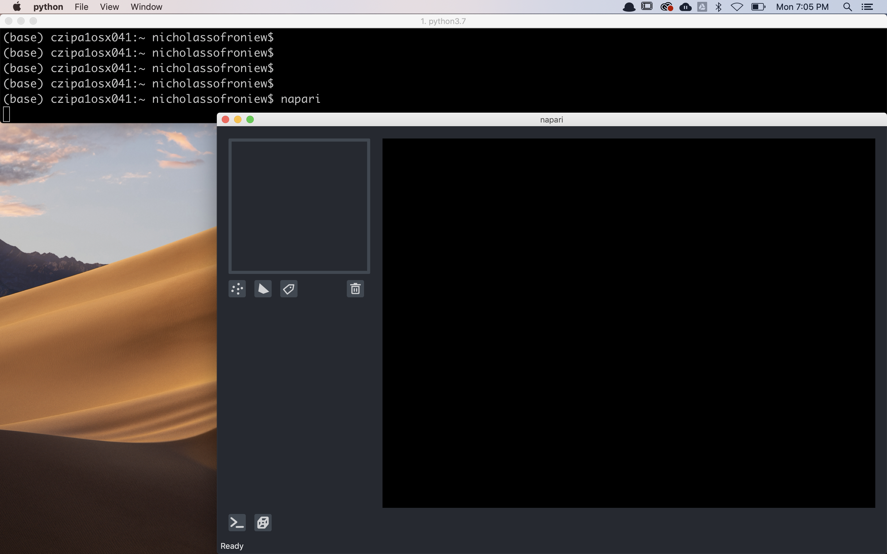

Getting started with napari¶
Welcome to the getting started with napari tutorial!
This tutorial assumes you have already installed napari. For help with installation see our installation tutorial.
This tutorial will teach you all the different ways to launch napari. At the end of the tutorial you should be able to launch napari and see the viewer your favorite way.
Launching napari¶
There are four ways to launch the napari viewer:
command line
python script
IPython console
jupyter notebook
All four of these methods will launch the same napari viewer but depending on your use-case different ones may be preferable.
Command line usage¶
To launch napari from the command line simply run
napari
This command will launch an empty viewer:

Once you have the viewer open you can add images through the File/Open dropdown menu
or by dragging and dropping images directly on the viewer.
We currently only support files that can be read with skimage.io.imread,
such as tif, png, and jpg.
We plan on adding support for more exotic file types shortly - see issue #379 for discussion.
You can also create new empty points, shapes, and labels layers using the new layer buttons in the bottom right of the viewer.
You can also directly load an image into the viewer from the command line by passing the path to the image as an argument as follows
napari my_image.png
If the image is RGB or RGBA use the -r or --rgb flag.
Launching napari directly from the command line is the simplest and fastest way to open the viewer, but it doesn’t allow you to preprocess your images before opening them. It is also currently not possible to save images or other layer types directly from the viewer, but we’ll be adding support for this functionality soon as discussed in #379.
Python script usage¶
To launch napari from a python script, inside your script you should import napari,
and then create the Viewer by adding some data.
For example, to add an image and some points inside your script you should include:
import napari
# create a Viewer and add an image here
viewer = napari.view_image(my_image_data)
# custom code to add data here
viewer.add_points(my_points_data)
# start the event loop and show the viewer
napari.run()
then run your script from the command line to launch the viewer with your data:
python my_example_script.py
See the scripts inside the examples in the main repository for examples of using napari this way.
An advantage of launching napari from a python script is that you can preprocess your images and add multiple layers before displaying the viewer.
IPython console usage¶
To launch napari from an IPython console import napari and create a Viewer object.
import napari
from skimage.data import astronaut
# create the viewer and display the image
viewer = napari.view_image(astronaut(), rgb=True)
Napari will automatically use the interactive %gui qt event
loop
from IPython
An advantage of launching napari from an IPython console is that the you can continue to programmatically interact with the viewer from the IPython console, including bidirectional communication, where code run in the console will update the current viewer and where data changed in the GUI will be accessible in the console.
Jupyter notebook usage¶
You can also launch napari from a jupyter notebook,
such as examples/notebook.ipynb
Similar to launching from the IPython console, an advantage of launching napari from a jupyter notebook is that you can continue to programmatically interact with the viewer from jupyter notebook, including bidirectional communication, where code run in the notebook will update the current viewer and where data changed in the GUI will be accessible in the notebook.
Next steps¶
To learn more about how to use the napari viewer with different types of napari layers checkout the viewer tutorial and more of our tutorials listed below.